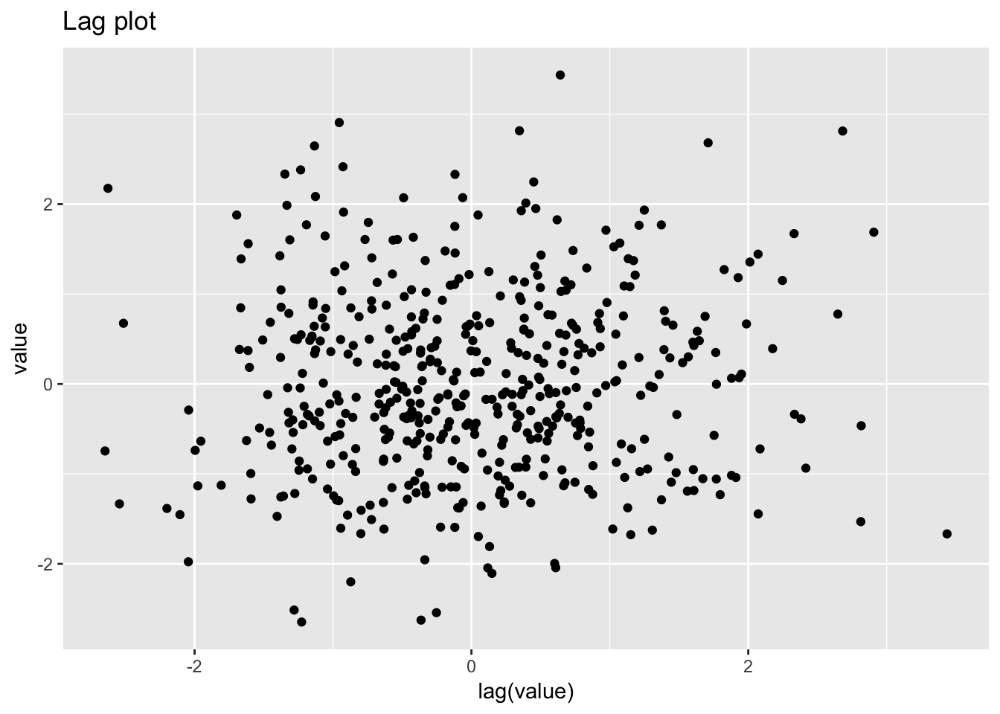
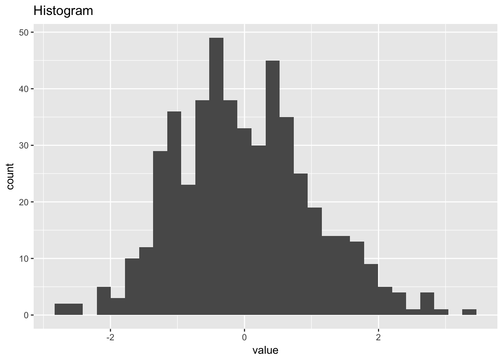
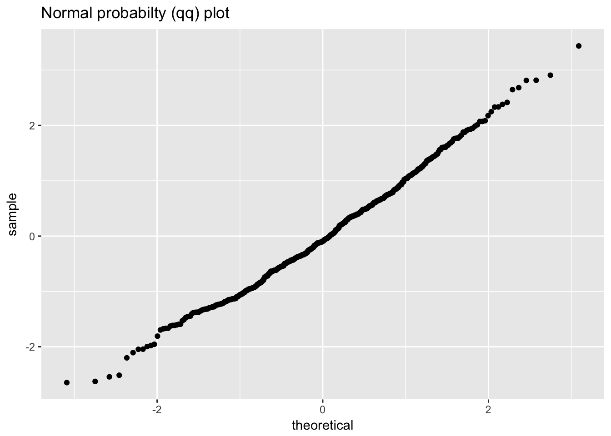
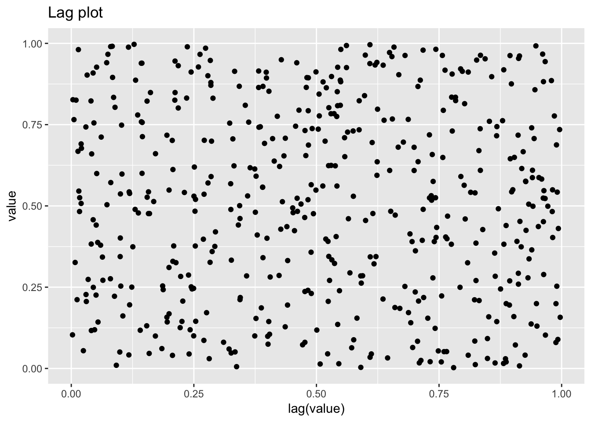
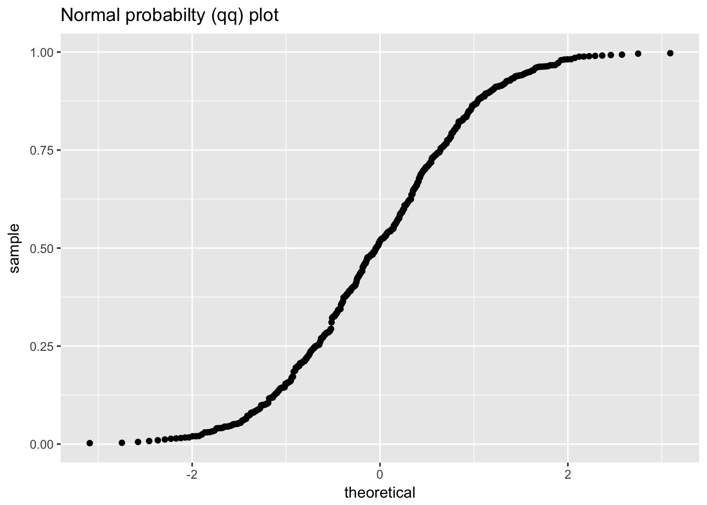
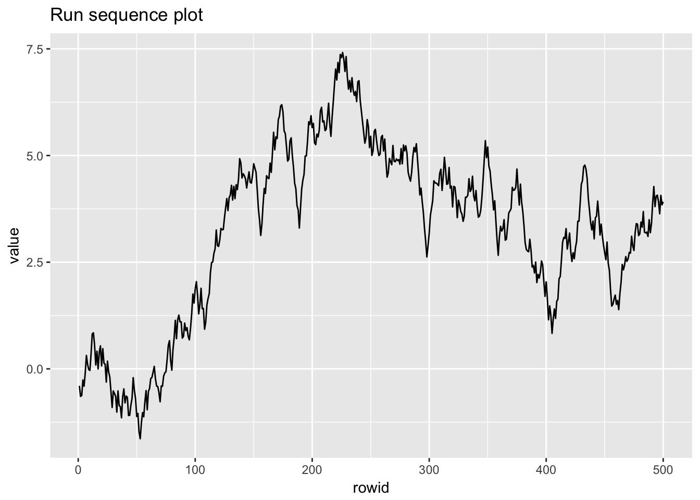
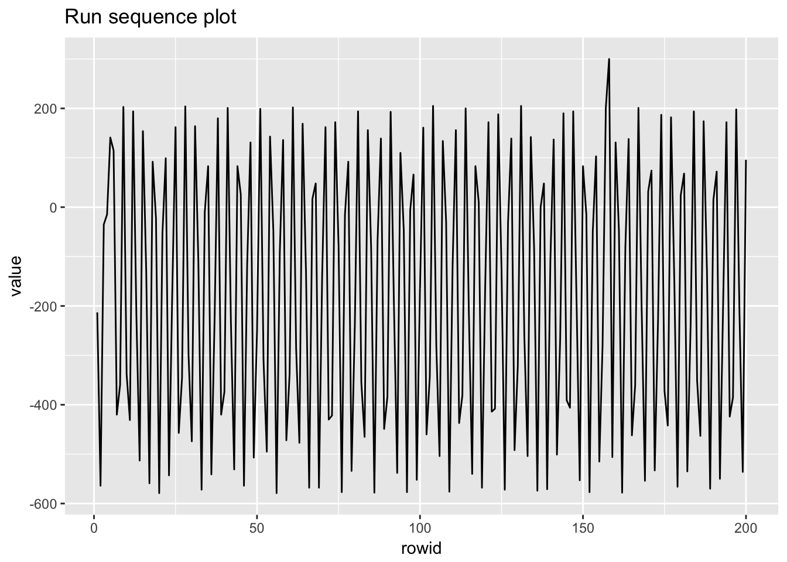

7 Process Monitoring
7.1 Packages used in this chapter
## ── Attaching packages ─────────────────────────────────────── tidyverse 1.2.1 ──## ✔ ggplot2 2.2.1 ✔ purrr 0.2.4
## ✔ tibble 1.4.2 ✔ dplyr 0.7.4
## ✔ tidyr 0.8.0 ✔ stringr 1.3.0
## ✔ readr 1.1.1 ✔ forcats 0.3.0## ── Conflicts ────────────────────────────────────────── tidyverse_conflicts() ──
## ✖ tidyr::extract() masks magrittr::extract()
## ✖ dplyr::filter() masks stats::filter()
## ✖ dplyr::lag() masks stats::lag()
## ✖ purrr::set_names() masks magrittr::set_names()7.2 Case Stuidies
7.2.1 Lithography Process Example
7.2.1.1 Background
One of the assumptions in using classical Shewhart SPC charts is that the only source of variation is from part to part (or within subgroup variation). This is the case for most continuous processing situations. However, many of today’s processing situations have different sources of variation. The semiconductor industry is one of the areas where the processing creates multiple sources of variation.
In semiconductor processing, the basic experimental unit is a silicon wafer. Operations are performed on the wafer, but individual wafers can be grouped multiple ways. In the diffusion area, up to 150 wafers are processed in one time in a diffusion tube. In the etch area, single wafers are processed individually. In the lithography area, the light exposure is done on sub-areas of the wafer. There are many times during the production of a computer chip where the experimental unit varies and thus there are different sources of variation in this batch processing environment.
The following is a case study of a lithography process. Five sites are measured on each wafer, three wafers are measured in a cassette (typically a grouping of 24 - 25 wafers) and thirty cassettes of wafers are used in the study. The width of a line is the measurement under study. There are two line width variables. The first is the original data and the second has been cleaned up somewhat. This case study uses the raw data. The entire data table is 450 rows long with six columns.
7.2.1.2 Data
litho <- read_table2("NIST data/monitor-6.6.1.1.dat",
skip = 4, col_names = FALSE) %>%
rename(cassette = X1, wafer = X2, site = X3, raw_linewidth = X4, run_number = X5, cleaned_linewidth = X6)## Parsed with column specification:
## cols(
## X1 = col_integer(),
## X2 = col_integer(),
## X3 = col_character(),
## X4 = col_double(),
## X5 = col_integer(),
## X6 = col_double()
## )## # A tibble: 450 x 6
## cassette wafer site raw_linewidth run_number cleaned_linewidth
## <int> <int> <chr> <dbl> <int> <dbl>
## 1 1 1 Top 3.20 1 3.20
## 2 1 1 Lef 2.25 2 2.25
## 3 1 1 Cen 2.07 3 2.07
## 4 1 1 Rgt 2.42 4 2.41
## 5 1 1 Bot 2.39 5 2.38
## 6 1 2 Top 2.65 6 2.64
## 7 1 2 Lef 2.00 7 1.99
## 8 1 2 Cen 1.86 8 1.85
## 9 1 2 Rgt 2.14 9 2.12
## 10 1 2 Bot 1.98 10 1.96
## # ... with 440 more rows7.2.1.3 Generate some simple plots

## Warning: Removed 1 rows containing missing values (geom_point).
## `stat_bin()` using `bins = 30`. Pick better value with `binwidth`.7.2.1.4 Summarise the raw linewidth and cleaned linesidth data
## raw_linewidth cleaned_linewidth
## Min. :0.7465 Min. :0.3205
## 1st Qu.:2.0505 1st Qu.:1.6476
## Median :2.4533 Median :2.0367
## Mean :2.5323 Mean :2.0813
## 3rd Qu.:2.9697 3rd Qu.:2.4856
## Max. :5.1687 Max. :4.36677.2.1.5 Plot the response against individual factors
ggplot(litho) +
geom_point(aes(cassette, raw_linewidth), alpha = 1/3) +
geom_boxplot(aes(cassette, raw_linewidth, group = cassette), alpha = 0, outlier.alpha = 1, outlier.colour = "red")
ggplot(litho) +
geom_point(aes(wafer, raw_linewidth), alpha = 1/10) +
geom_boxplot(aes(wafer, raw_linewidth, group = wafer), alpha = 0, notch = TRUE, outlier.alpha = 1)
ggplot(litho) +
geom_point(aes(site, raw_linewidth), alpha = 1/10) +
geom_boxplot(aes(site, raw_linewidth), alpha = 0, notch = TRUE, outlier.alpha = 1)
7.2.1.6 DOE plots
We need to gather the factors in to a single column
litho_DOE <- litho %>%
gather(`cassette`, `wafer`, `site`, key = DOE_factors, value = "value")
litho_DOE## # A tibble: 1,350 x 5
## raw_linewidth run_number cleaned_linewidth DOE_factors value
## <dbl> <int> <dbl> <chr> <chr>
## 1 3.20 1 3.20 cassette 1
## 2 2.25 2 2.25 cassette 1
## 3 2.07 3 2.07 cassette 1
## 4 2.42 4 2.41 cassette 1
## 5 2.39 5 2.38 cassette 1
## 6 2.65 6 2.64 cassette 1
## 7 2.00 7 1.99 cassette 1
## 8 1.86 8 1.85 cassette 1
## 9 2.14 9 2.12 cassette 1
## 10 1.98 10 1.96 cassette 1
## # ... with 1,340 more rows## # A tibble: 1,350 x 5
## # Groups: DOE_factors, value [38]
## raw_linewidth run_number cleaned_linewidth DOE_factors value
## <dbl> <int> <dbl> <chr> <chr>
## 1 3.20 1 3.20 cassette 1
## 2 2.25 2 2.25 cassette 1
## 3 2.07 3 2.07 cassette 1
## 4 2.42 4 2.41 cassette 1
## 5 2.39 5 2.38 cassette 1
## 6 2.65 6 2.64 cassette 1
## 7 2.00 7 1.99 cassette 1
## 8 1.86 8 1.85 cassette 1
## 9 2.14 9 2.12 cassette 1
## 10 1.98 10 1.96 cassette 1
## # ... with 1,340 more rowslitho_summary <- litho_group %>%
summarise(mean_factor = mean(raw_linewidth), count = n())
litho_summary## # A tibble: 38 x 4
## # Groups: DOE_factors [?]
## DOE_factors value mean_factor count
## <chr> <chr> <dbl> <int>
## 1 cassette 1 2.27 15
## 2 cassette 10 2.29 15
## 3 cassette 11 2.68 15
## 4 cassette 12 1.81 15
## 5 cassette 13 2.73 15
## 6 cassette 14 2.97 15
## 7 cassette 15 1.83 15
## 8 cassette 16 2.45 15
## 9 cassette 17 2.28 15
## 10 cassette 18 2.39 15
## # ... with 28 more rows
litho_summary_sd <- litho_group %>%
summarise(sd_factor = sd(raw_linewidth), count = n())
litho_summary_sd## # A tibble: 38 x 4
## # Groups: DOE_factors [?]
## DOE_factors value sd_factor count
## <chr> <chr> <dbl> <int>
## 1 cassette 1 0.403 15
## 2 cassette 10 0.428 15
## 3 cassette 11 0.486 15
## 4 cassette 12 0.449 15
## 5 cassette 13 0.345 15
## 6 cassette 14 0.403 15
## 7 cassette 15 0.433 15
## 8 cassette 16 0.466 15
## 9 cassette 17 0.492 15
## 10 cassette 18 0.496 15
## # ... with 28 more rows
7.2.1.7 Subgroup analysis
7.2.1.7.1 Run chart
The chart below adds the mean and control limits based on the standard deviation of the data.
sd_lw <- litho %$%
sd(raw_linewidth)
mean_lw <- litho %$%
mean(raw_linewidth)
ggplot(litho) +
geom_line(aes(run_number, raw_linewidth)) +
geom_hline(yintercept = mean_lw + 2*sd_lw, linetype = "dashed") +
geom_hline(yintercept = mean_lw - 2*sd_lw, linetype = "dashed") +
geom_hline(yintercept = mean_lw)
7.2.1.7.2 Summarise by wafer
litho_wafer <- litho %>%
group_by(cassette, wafer) %>%
summarise(wafer_mean = mean(raw_linewidth), wafer_sd = sd(raw_linewidth)) %>%
rowid_to_column(var = "wafer_number") %>%
ungroup()
litho_wafer## # A tibble: 90 x 5
## wafer_number cassette wafer wafer_mean wafer_sd
## <int> <int> <int> <dbl> <dbl>
## 1 1 1 1 2.47 0.431
## 2 2 1 2 2.13 0.311
## 3 3 1 3 2.22 0.456
## 4 4 2 1 2.43 0.443
## 5 5 2 2 1.87 0.296
## 6 6 2 3 2.05 0.322
## 7 7 3 1 1.68 0.331
## 8 8 3 2 1.83 0.311
## 9 9 3 3 1.70 0.333
## 10 10 4 1 2.18 0.441
## # ... with 80 more rows7.2.1.7.3 Wafer stats
sd_wafer <- litho_wafer %$%
sd(wafer_mean)
rms_sd_wafer <- litho_wafer %>%
select(wafer_sd) %>%
mutate(sd_squared = wafer_sd^2) %$%
sqrt(mean(sd_squared))
mean_wafer_sd <- litho_wafer %$%
mean(wafer_sd)
mean_wafer_sd## [1] 0.407502## [1] 0.5862159## [1] 0.41892277.2.1.7.4 Wafer mean control chart
ggplot(litho_wafer) +
geom_line(aes(wafer_number, wafer_mean)) +
geom_hline(yintercept = mean_lw + 2*sd_wafer/sqrt(5), linetype = "dashed") +
geom_hline(yintercept = mean_lw - 2*sd_wafer/sqrt(5), linetype = "dashed") +
geom_hline(yintercept = mean_lw)
7.2.1.7.5 SD control chart by wafer
Using the methods from (2.2.3.1. Control chart for standard)[https://www.itl.nist.gov/div898/handbook/mpc/section2/mpc231.htm] we can construct an UCL for the standard deviations
## `stat_bin()` using `bins = 30`. Pick better value with `binwidth`.
ggplot(litho_wafer) +
geom_line(aes(wafer_number, wafer_sd)) +
geom_hline(yintercept = 2*rms_sd_wafer)
7.2.1.7.6 Summarise by cassette
litho_cassette <- litho %>%
group_by(cassette) %>%
summarise(cassette_mean = mean(raw_linewidth), cassette_sd = sd(raw_linewidth)) %>%
ungroup()
litho_cassette## # A tibble: 30 x 3
## cassette cassette_mean cassette_sd
## <int> <dbl> <dbl>
## 1 1 2.27 0.403
## 2 2 2.12 0.412
## 3 3 1.74 0.309
## 4 4 2.44 0.515
## 5 5 3.02 0.528
## 6 6 2.58 0.446
## 7 7 2.32 0.472
## 8 8 1.78 0.449
## 9 9 1.78 0.422
## 10 10 2.29 0.428
## # ... with 20 more rows